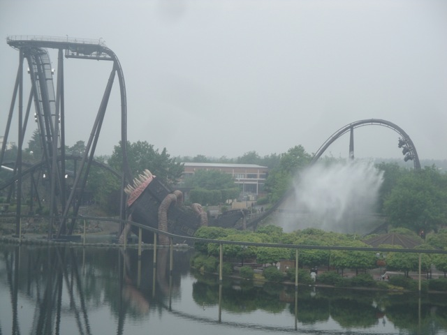
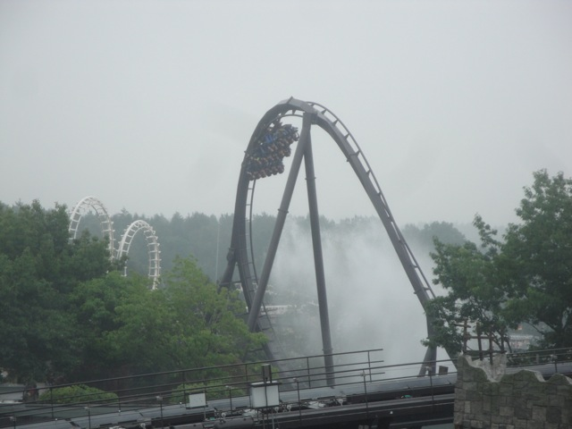
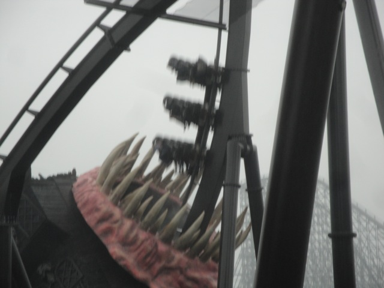
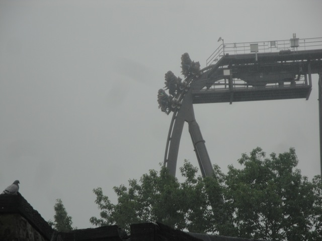
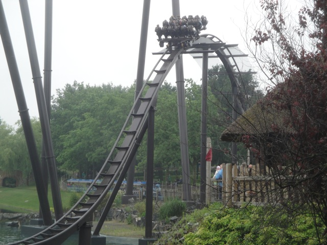
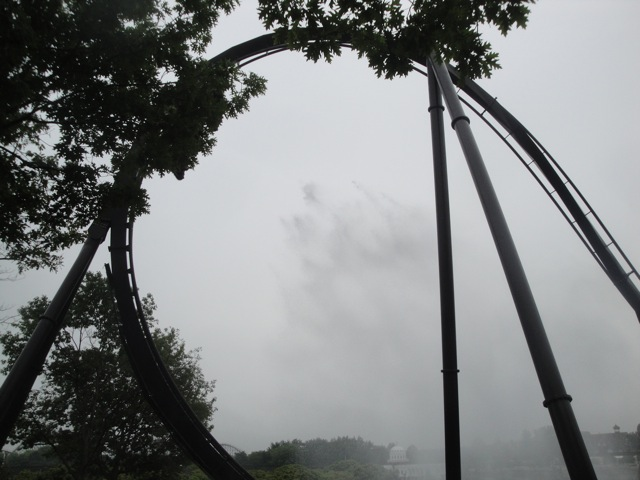
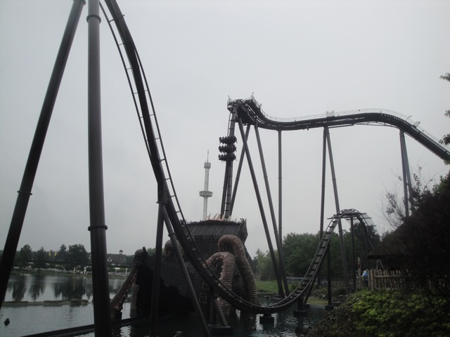
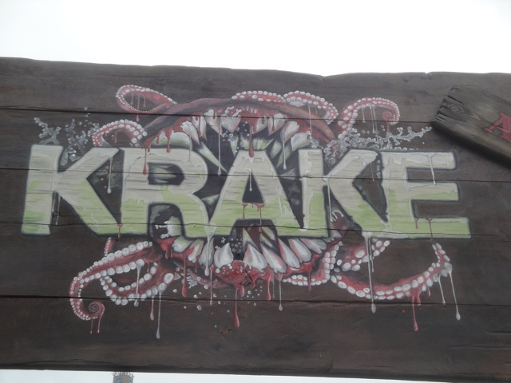

| |
Krake Review

For today's review, we are heading to Heide Park to review Krake. Once you board the bigass rows, you take your seat and pull down the OTSR. The seat is fairly high up due to the elevated seating for the fact that it's a dive coaster. Once we get our restraints checked by the ride operators, the gates open, say goodbye to the floor and away we go! We begin to climb the lifthill. Now on most coasters, the lifthill isn't that steep and it's just a climb up to the top. However, Krake's lifthill is about as steep as the drop on a normal coaster. So you're pretty much facing the sky while you're climbing the sky and you can definetly tell that it is steeper than the average lifthill. Then we crest the top of the lifthill. We roll around the turn at a pretty slow pace, really giving us a chance to enjoy the view of Heide Park. And to be fair, it is a really good view of the lake and a bunch of the other coasters at Heide Park. We then stop at the edge of the turn, right at the crest of the first drop, looking straight down. Now looking down, we have a really great view. We see this ship right down below us as well as the mouth of the kraken, with teeth galore. Oh crap!! When I heard that Heide Park wanted us to be a part of their dining experience, this isn't what I was anticipating. While some scream in horror at our fate of winding up dinner for the Kraken, all is useless. We drop. It's a fun little drop with some nice ejector air in the back. And...GULP!! Swallowed whole. All those teeth don't do anything for us. We just glide right through, and apparently, humans are to Krakens what Taco Bell is to humans. Immidietly shat right out. I hope we burned coming out. We go through a little straight track, which actually serves as a splashdown for those watching us offride. Great. Looks like we caused a sh*t splash for the Kraken. We then head up into an Immelmann Loop. It's not very big, but it has some nice forces and is a lot of fun. Quick note. The splash is actually huge, it's actually the size of the Immelmann, and you just might get sprinkled from that splashdown water. Be careful. We actually have a little bit of whip coming out of the immelmann and pick up some speed coming back down. We then head up into an airtime hill, which of course, gives us a nice pop of airtime. It's not the best, but it's still really good. We then head into a banked turn, rise a little, and glide into the brake run. So yeah. It's a short little ride (a problem that plagues all of the Dive Machines). But it's a fun little ride too. Granted, between this and Sheikra, Sheikra is obviously the better ride. But this is still good too. It has some good airtime, the drop is really fun, there's actually a little forces in the Immelmann, and of course, the Kraken theming is just a ton of fun. Definetly recommended if heading over to Heide Park.
8/10
Location: Heide Park
Opened: 2011
Built by: B&M
Last Ridden: June 27, 2012
Krake Photos








Home
|